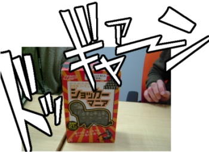
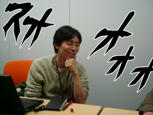

Rubyist Hotlinks 【第 14 回】 角谷信太郎さん
はじめに
著名な Rubyist にインタビューを行う企画「Rubyist Hotlinks」。今回は、Rabbit ユーザーズグループ代表の角谷信太郎さんにお話を伺いました。
プロフィール
 あとで書く。
あとで書く。
- 好きな言葉
- 「肖像画に/まちがって髭を書いてしまったので/仕方なく髭を生やすことにした」
- 尊敬する人
- ピーター・ジャクソン
- ご本人のサイト
- 角谷 HTML 化計画
インタビュー
- 聞き手
- ささだ
- 語り手
- 角谷さん
- 野次馬
- 須藤さん、卜部さん
- 日にち
- 2006 年 4 月 12 日
- 場 所
- 秋葉原のどこか
目次
- はじめに
- プロフィール
- インタビュー
- おわりに
- Rubyist Hotlinks 連載一覧
開始前の一コマ
プレゼント本の人気
卜部 なんかねえ、四月のやつ (Perlish Magazine) があまりにマジすぎたのでだれもネタと思ってくれなかったらしく。
角谷 いやあ、あれはすごかった。ネタのような外見で中身がマジ、という。感動しちゃいました。
須藤 感動しちゃいましたか。
笹田 みんなネタだと思っててまともに読まなかったという話もあって。
卜部 プレゼント応募来たの？
笹田 結構来てるよ1。
須藤 普段はどれくらいなんですか？
笹田 普段は……内緒 (笑)
卜部 ものによるよね。
笹田 ものによる。 はすごくたくさん応募が来ました。みんな基礎講座欲しかったんですね。私あんまり基礎講座はちょっとこう、基本的すぎてつまんないのかなと思ってたんだけど。
はすごくたくさん応募が来ました。みんな基礎講座欲しかったんですね。私あんまり基礎講座はちょっとこう、基本的すぎてつまんないのかなと思ってたんだけど。
東京に来たばかりの須藤さん
 須藤 卜部さんはどこに住んでるんですか？
須藤 卜部さんはどこに住んでるんですか？
卜部 住んでるのは調布ですが。
須藤 調布って言うと山手線からだとどれぐらい？
卜部 山手線から言うと新宿から三十分とか。三十分かかんないときもありますね2。
笹田 で、須藤さんは今どこに行ってるの？
須藤 会社はグのつくところですけど。会社の位置ですか？ 水道橋です。だからここ (秋葉原) の隣の隣ですね。
笹田 じゃあ今度遊びにとか。
須藤 もちろんじゃないですか。来てください。
角谷 もう仕事はしてるんですか？
須藤 仕事……ああ、いまはちょっと微妙なんですよね (笑) 東京は事務所作ったばっかりで。この間、っていうか昨日までナローバンドでした。
角谷 東京は仕事としてはこれからなんですか。
笹田 大阪しか聞いたことなかったので、須藤さんは大阪に行くんだとばかり……。
須藤 私もびっくりですよ、今年の二月か三月に聞きましたから。大阪に行く気満々だったのに。
角谷 大阪って言ってましたもんね。だから、あんまり会えないんだ、残念だなーと思ってたのに。結局は、ここへ気軽に来れちゃうという。
須藤 複雑な気持ちですよ。
プロフィール
生年月日とか
笹田 じゃあ、えっと……就職おめでたい須藤さん今日はありがとうございます。
一同 (笑)
角谷 ちゃんとスラド認定スーパーハカーの Rubyist を連れてきましたので。あとは若い人たちでゆっくりと (笑)
笹田 (笑) ……じゃなくて、角谷さんどうもお忙しいところありがとうございます。
角谷 はい。よろしくおねがいします。
笹田 まずプロフィール。出身とか生年月日住所家族構成とかまあ言えるところで。
角谷 言えないところは特に無いので。生まれは 1975 年、なので 31 歳です。出身は大阪で、今は両国に住んでます。
笹田 大阪出身だったんですか。
角谷 はい大阪です。就職して東京に出てきました。
笹田 全然関西弁っぽくないですよね。
角谷 そうですね。周りに関西人がいないと。
笹田 昔はもう普通に関西弁だったんですか。
角谷 まあ、普通に関西弁。こないだ、友人の結婚式で大阪に帰省した後に東京に戻ってきたときは関西弁は半月ぐらい抜けませんでした。
韋駄天のバートホールド
笹田 ご家族は。
角谷 家族は妻と息子と、あと亀。亀も家族です。リクガメ。
須藤 名前なんでしたっけ？
角谷 バートホールドです。
笹田 名前の由来はあるんですか？
角谷 名前の由来ありますよ。
須藤 おおっ。
角谷 あるよ、ちゃんと。
須藤 なんかいろいろありそうですもんね。
角谷 テリー・ギリアム3の映画に っていうのがありまして。そこに、すごく足の速い人が出てくるんですよ。韋駄天のバートホールドっていうのが。普段は足に重い錘をつけてるけど、それを外すと超速い。エリック・アイドルが演じてます。
っていうのがありまして。そこに、すごく足の速い人が出てくるんですよ。韋駄天のバートホールドっていうのが。普段は足に重い錘をつけてるけど、それを外すと超速い。エリック・アイドルが演じてます。
須藤 じゃあ亀も速い？
角谷 これが意外に速い。「速いよ」って言っても誰も信じてくれないんですけどね。ヘルマンリクガメは速いです。
笹田 お子さんはお一人なんですか。
角谷 はい。一人です。一人でもういっぱいいっぱいです。
座右の銘
笹田 好きな言葉、座右の銘などありましたら。
角谷 最近はねえ、こっち方面だと……
えっと、 の 2 ページ目に「人生は、自分の仕事を憎むにはあまりに短いのだ。」というのがあって。丁度「愚痴ぐち言うのやめよう、やめたいなー」と思っていた時に出会ったので。
の 2 ページ目に「人生は、自分の仕事を憎むにはあまりに短いのだ。」というのがあって。丁度「愚痴ぐち言うのやめよう、やめたいなー」と思っていた時に出会ったので。
須藤 角谷さんにはもっとガーと言ってほしいですよね。「いや、これはだめなんだよ！ とかこうしよう！ こうしよう！」ってガーっと。
角谷 個人的に長く座右の銘なものでいうと……今回のるびまのインタビューもそうなんですけど、寺山修司4の「わたしのイソップ」という詩の冒頭。「肖像画に/まちがって髭を書いてしまったので/仕方なく髭を生やすことにした」っていうのがある。「門番を雇ってしまったので/門を作ることにした」と続くんですけど。これが非常に自分らしくて気に言ってます。
笹田 なるほど。
角谷 「Rubyist Hotlinks に呼ばれたから Ruby がんばって書くことにした」とか。
須藤 ああ、いいっすね、それ。
好きなスタンド
笹田 えーと、好きなスタンドは？
角谷 スタンド……。私、スタンド世代じゃないんですよ。
笹田 波紋？
角谷 そうそう。世界には二種類の人間が居まして。ジャンプで、荒木飛呂彦の新連載を、ジョジョの初回を、めくって見ちゃった人と、そうでない人の二種類が。ディオが馬車からジャンプしてバァーン!! と見開きで降りてくるのを 20 年前に目撃しちゃった人たち。私のジョジョとの付き合いはそこからなので、どのスタンドが、というよりもディオが好き。
笹田 じゃあ好きなセリフは？
角谷 「覚悟したものは幸いである」。
須藤 好きな効果音は？
角谷 好きな効果音は「ドギャーン」。あと「ゴゴゴゴゴ」。
尊敬する人
笹田 では、尊敬する人はどうでしょう。
角谷 最近だとピーター・ジャクソン5かな。『ロード・オブ・ザ・リング』の人。
笹田 ほう。
角谷 彼は映画を撮ることがすごく好きで、好きで、それを極めて世界を獲った。で、その勢いで自分が映画の道を志すきっかけになった『キング・コング』をリメイクしてやりたい放題。すばらしいね。
卜部  いいんですか。
いいんですか。
角谷 『キング・コング』は映画として云々ということは置いといて、自分の好きなことを好きなようにやる。そのためにお金をいっぱい使って。自分の好きなことを通して世界を獲るって素敵だな、と。
笹田 じゃあ、映画とかよく見るんですか。
角谷 昔はよく見てましたけど、最近はダメですね。
笹田 忙しくて？
角谷 「忙しい」は言い訳でしかないと思うんで。実態として映画館にぜんぜん通えてない。ダメダメです。
代表作
笹田 代表作というと。
角谷 代表作なしです。
笹田 なし？
角谷 強いて言えば RAA:rabbit のファイルとかテーマ。
須藤 角谷さんのテーマはいいですね。
笹田 別に Ruby でなくても構いませんけれども。
角谷 代表作というか……石井勝さんが亡くなられてしまったので、遺作の Eclipse プラグイン、Quick-Junit は引き取ってます (角谷HTML化計画 - Quick JUnit Plugin for Eclipse 0.3.0.1をリリースしました)。
元々はソースコードは公開されてなかったんですけれども、去年の頭に石井さんに「オープンソースにして欲しい」とお願いして。お忙しいなか、少しずつ公開に向けた作業をされていた途中であの事故が起きちゃって。
で、引き取ったといっても、大したメンテもしてなくて……いちおう動くようにだけはしてあるんですが……。といっても、新しいバージョンで動くようにしてくれたのも私じゃなくて小林さんで。私じしんは全然拡張とかもしてない。申し訳ないなあと思ってます。
笹田 プラグイン、というと？
角谷 プロダクトのコードとテストクラスとをワンキーで行ったり来たりできたり、テストを実行したり、っていうプラグインなんですけど。すごく便利で。ちゃんとメンテしていかないとなーと思いつつもう一年が経とうとしている。
須藤 リリースもしてない？
角谷 リリースはまあちょこちょこっとは。といっても、引き取ってすぐに一度リリースして、小林さんが対応してくれてから後は、Eclipse のバージョンが上がっても動いちゃってるからリリースしてない。いろいろネタはあるんだけどやれてないですね。
(その後、石井勝さんの命日に合わせてリリースを行おうとしたのだけれど、日にちは変わってしまうわ (角谷HTML化計画 - Quick JUnit Plugin for Eclipse 0.3.0をリリースしました)、Javaのバージョンによっては動かないわ (角谷HTML化計画 - Quick JUnit Plugin for Eclipse 0.3.0.1をリリースしました) と情けないことこの上ないリリースでした)
だから自分としての代表作は無いです。
須藤 このために作ってきましたとか。
角谷 それができればカッコいいんですけど、やりきれないからダメですねえ。
笹田 では、著作というと。
角谷 著作もない。著作なし。
須藤 雑誌記事とかありますよね。
角谷 あっそうか。Amazon のデータベースに自分の名前のレコードがあるものとしては、すごく売れてるという噂の  、
、
……のなかで、Life Hacks と全然関係ないことを書いてます。
須藤 かっこいい。
笹田 どんなことを書いたんですか？
角谷 「勉強会やりましょう」みたいな感じの記事を。他の記事は、平林さんのプレゼンとか田口さんの GTD とかね。知り合いの皆さんも kdmsnr さんとか id:t-wada さんとか、がマインドマップや文房具を。みんな「Life Hacks!!」って感じだけど、一人だけなんかポジションペーパーやろうとか qwikWeb イイよとか。勉強会を無理矢理 Life Hacks だと言い張りつつ。
笹田 すごい売れてるんだ。
角谷 売れてるらしいですよ。でもまあ、全然私は売れ行きに関係ないんですけど。エゴサーチ6してみつかるレビューとかでは大抵、最後に「勉強会もあるよ」みたいな (笑) とりあえず触れとくか、みたいな。あ、そうだ。お一人だけ、すごく誉めてくださってる方 (dshinaの日記 - Life Hacks PRESS ~デジタル世代の「カイゼン」術~) がいらっしゃって。光栄です。
笹田 なるほど。
角谷 あと、今年は Ruby の記事をオープンソースマガジンの Rails 特集に書きました。Ruby のことを商業誌に書けてすごーく嬉しかったです。高橋さんありがとうございます。
須藤 Rails 特集？ RAA:rake の記事じゃありませんでしたっけ。
角谷 そう。Rails 特集で Rake のことを書く (笑) 私が記事を書くときはアウェイが基本のようで。
あと、私が書いたもので、たぶん一番読まれてるのは、Dependency Injection の翻訳 (Inversion of Control コンテナと Dependency Injection パターン) ですね……って、私が、じゃなくてファウラーが良い記事を書いたからですけど。元が良いこともあって、あれは評判が良いです。「分かりやすかったです」とか直接メールをもらったりして、嬉しかったです。
須藤 翻訳は結構やってませんでしたっけ？
角谷 結構、というほど翻訳はやってないですよ (かくたにのWiki - 翻訳記事の一覧)。
須藤 bliki_ja のほうで。
角谷 ああ、少し前は、kd さんのとこ……kd さんって児玉サヌールさんですけど、kd さんとこの bliki_ja の小人っていうか、時どきこぼれ玉を拾うみたいな感じのことはやってましたけど。
Ruby とのインタラクション
好きなメソッド嫌いなメソッド
笹田 好きなメソッド嫌いなメソッド。そろそろもうこれもなんかマンネリ化してますが。
角谷 いやあ、これは Ruby の文化じゃないんですか？ 他の言語コミュニティにはこの文化は無いんですかね。私の印象では、Ruby の人たちはみんなこれを言ってるんですが。
私はこれを言えれば一人前の Rubyist だと思い込んでいて。こないだデブサミで喋ったときは、プロフィールに聞かれてもないのに勝手に (笑)
須藤 一人前宣言ですね。
角谷 前の年に咳さんが、頼まれてもいないのに「好きな言語は Ruby」とか書いてたから。「俺もやろう」と思って。形から入る。
笹田 なるほど。
角谷 ……で。好きなメソッドというか、最初に感動したのは Object#extend。
卜部 あー。
角谷 「ををっ、そうなんだ」みたいな感動を。
笹田 私は Module#include と Object#extend の違い7が分からなくて。
角谷 そそ、最初は分かんなくて、あれが分かったときに。
笹田 うんうん。
角谷 「あ、そっか、Object に！」みたいなのを理解できたときに感動しました。あと、よく使うのは Enumerable#collect 、っていうのは定番ですよね。
卜部 collect 派ですか8。
角谷 最近は背伸びをして map を。
須藤 えー。
笹田 map は背伸びなんだ (笑)
角谷 私の中では。関数型言語も知ってるよ、みたいな。
須藤 いやダメですよ。Ruby で map 使っちゃいけないですよ9。
角谷 ダメなのか……。
笹田 だって collect って全然 collect っぽくないじゃん10。
須藤 集めてる感じするじゃないですか。
笹田 集めてるのって Enumerable#select っぽいんだけど。
須藤 select は選んでる感じしない？
笹田 これとこれとこれを集めるっていう感じで。
須藤 select して collect してるじゃないですか (笑)
笹田 やっぱり map だと写像っていう感じかなあ、と。
須藤 えーなんか Scheme っぽくなって嫌です。
笹田 だってあれ MatzLisp なんだから。
角谷 でも、まつもとさんは map じゃないんですよね11。違ったっけ？
須藤 collect 派じゃなかったでしたっけ。
角谷 あとはねえ、Module#const_get がびっくりしました。なんだこりゃ、と。Java とかやってるとね。
須藤 あー、リフレクションするんだ、と。
角谷 うん。びゅっとクラスが取れちゃって、うわっ、new できちゃった (笑) インスタンス作れるんだ、みたいなのが。
卜部 const_get みたいなことは Java ではできないんですか。
角谷 できないのかな？ リフレクションでがんばればできると思うけど。
卜部 Java の処理系を作ったことがあるささださん的にはどうですか。
笹田 だってあれライブラリじゃん。リフレクションの話だからさ、リフレクションまでは手入れてなかったから。昔作ったときには。
角谷 クラス取ってきて new と同じようなことはできたと思いますけど、Ruby は定数もクラスも同じように取れちゃうじゃないですか。というかクラス名が定数という。あれが面白いっていうか、extend と近いびっくりを感じましたね。
須藤 メタっぽいのけっこう好きだったりするんですか。
角谷 映画が好きだったり Web に日記を書くような人間は大抵、自己言及が好きなんです。といっても私はメタは好きだけど、あまり使いこなせてない。さらに、他人の書いたメタはよく分からない。
笹田 嫌いなメソッドとかは？
角谷 嫌いというか、困るのがですね、Ruby コアのメソッドじゃないんですけど、 test/unit の assert_equal。私は Java を書いてる時間が長いので、Java 書いた後に Ruby に戻ると assert_equals って書いていつも怒られる。
笹田 (笑)
須藤 あれはどっちがいいんですか。個人的に。
角谷 どっち、といっても、 Ruby は三単現の s はつけない派じゃないですか。だから……JUnit が assert_equal になってくれるのが理想 (笑)
笹田 Ruby に alias つけちゃえば早いんじゃないの？
須藤 いやでも、ここはるびまですから (笑) Java が Ruby に合わせるということで。
角谷 あと、Java から戻ってくると、super が。Java だと super は親の参照だけど Ruby だと親のメソッド呼んじゃうのが混乱する。さらに、引数なしの super でハマる。引数そのまま親に渡っちゃうというのもよく忘れる。自分ではあんまり super は使わないんですけど、あんまり使わないので、逆に使う場合はいつもハマる。それくらいですかねえ。
Ruby との出会い
笹田 Rubyist になったきっかけはいつごろからでしたか。
角谷 まつもとさんと石塚さんの書いたアスキーの最初の本 ( ) が最初の出会い。
) が最初の出会い。
笹田 Ruby本？ 1999 年。
角谷 といっても、買ったのは出版よりも少し後です。先日、まつもとさんにハチドリのハンコを押してもらうために、久々に書棚から出して確認したら三刷だった。なので、1999 年の終わりか、2000 年入ったか、それくらいの頃。
笹田 はい。
角谷 当時、私は Oracle の PL/SQL12 のバッチを書くプログラマで。PL/SQL よりもイマドキっぽいのをやりたいなぁと思ってて。その頃というのは、Java がサーバサイドで利用されて仕事にも使われはじめていた頃で。「これからはオブジェクト指向だ」と。あとその頃は、PL/SQL 以外ではちょっと Perl を書いてましたね。 Perl が楽しくて。
笹田 楽しかった？
角谷 スクリプト言語だから、書いてたらすぐ動くじゃないですか。PL/SQL みたいにめんどくさいコンパイルは要らなくて。それが面白くて。といっても、普通にダラダラと手続を並べて書いてたんですけど。で、Perl で難しかったのが、オブジェクト指向。これが全然分かんなくて。ぶ、bless？ はあ……みたいな感じで。躓いちゃいました。
卜部 たしかに、あれからオブジェクト指向に入門するのは辛いですね。
角谷 いちおう、 PL/SQL の前は PowerBuilder13 っていうちょっと変わった言語というか環境を仕事で使ってて、それもオブジェクト指向だったんですけど。
卜部 そんなんあるんだ。
角谷 新人の頃の仕事で。オブジェクト指向とは差分プログラミングである、みたいな資料を渡されてやってたんですけど、オブジェクト指向はよくわかってなかった。Java もオブジェクト指向だと聞いて触ってみたけど、それもやっぱりオブジェクト指向がよく分かんなかった。
で、Ruby を触ったら、……ある日突然、わかった。どうしてわかったかはもう覚えてないですけど、オブジェクト指向って「ああこういうことか」という納得感は Ruby で体験した。
笹田 それは Ruby 本を読んで分かった？
角谷 いやいや、Ruby 本じたいは難しかったですよ。いまでもちゃんと理解できるかどうか (笑) ただ、Ruby がきっかけになったことは確か。リファレンスのサンプルコード (あれはイイですね) を見ながら、irb を使ってプログラムをちょこちょこっと書いて。
笹田 使ってたら分かった、と。
角谷 そうそう。irb のオブジェクトと対話してる感じが良かったのかも。オブジェクト指向が分かった気になると、Ruby がもっと面白くなって。なので、当時にいっぱい出てた Ruby 関連本は片っ端から買ってました。
笹田 じゃあ Ruby 本棚があったりとか。
角谷 ありましたよ、っていうか今もある。須藤さんの ( ) も持ってますよ。著者のふりがなが「スドウコウヘイ」って書いてあるやつ。
) も持ってますよ。著者のふりがなが「スドウコウヘイ」って書いてあるやつ。
須藤 ……ちょっと今日はその話題はナシで。
笹田 RAA:rexml って読み方は レックスエムエル でいいんだっけ？
須藤 読めないですよね。私は、アールイーとかリとかいってましたよ。14
笹田 でも REXML って日本語のまとまった文献ってないですよね。
角谷 須藤さんが翻訳した REXML のドキュメント……こないだ見ようとしたら見れなかった15んですけど。
須藤 あれは訳がひどかったので、最近翻訳し直したんですよ。今はここ (REXML API document (ja)) に置いてあります。前よりはましになったと思います。
角谷 REXML は難しいですね。使い方が Ruby っぽくないというか。うまく言えないんですけど……いつまでたっても使い方を覚えられない。
須藤 思い通り動かないんですよね。あれ。
角谷 インデックスの取り方とかよくわかんないです。
笹田 この前、REXML を 1.8 にしたら私の日記がなんか変になっちゃって。あとで直し方教えてください16。
一同 (笑)
Ruby とのつきあい
笹田 現在の Ruby とのつきあいといいますと。
角谷 「Ruby Ruby 言ってる人」です。
笹田 エヴァンジェリスト？
角谷 エヴァンジェリストっていうとカッコいいですけど。「いま Ruby に投資しないことはリスクである」とか IT 投資を煽ったりして。エヴァンジェリストというと、広めてる人になんか経済的な利益がある感じがしますけど、私の場合は……なんか Ruby Ruby 言ってるだけ、という (笑)
須藤 利益あるじゃないですか。ここに呼ばれたっていう。
角谷 まあ、Ruby Ruby 言ってるだけでここまで来れたという意味では利益はあるか (笑) こんな私でも呼んでくれる Ruby コミュニティはナイスですね。なので、Ruby とのつきあいは「Ruby Ruby 言ってる人」。言ってるだけ。エヴァンジェリストというか応援団。
笹田 応援団団長ということで。
須藤 いろんな団長してますね。
角谷 色々はしてないですよ。
須藤 いやー、してくれてるじゃないですか。Rabbit の応援団長。
入団の儀式
須藤 団長といえば、あげたいものがあるんですけど。ショッカー17のしるしを。ショッカーマニア。 
角谷 おっきいね、これ。
須藤 違うんですよ。中にちっちゃいショッカーが二十一体入ってるんです。ユーザーズグループにはいっぱい人がいるんで。すでに四体渡してますから。角谷さんには団長を (笑)

(贈呈される)
須藤 これで待ち合わせのときはみんなショッカー持って集合 (笑)
一同 (笑)
Ruby とのかかわり (続)
卜部 自分で Ruby で書いたりはしないんですか。
角谷 コードを、ってことですか？ 使うぶんには普通に。
笹田 何に使ってますか。
角谷 普段のこまごまとしたファイル弄りとか。仕事だと、ビルドとか自動化に Rake を。あとは Java ソースコードの生成。
須藤 おー、凄くメタじゃないですか。
角谷 メタっていうほどでは。 ダラダラ書いてある ERB のテンプレートに Java のクラス名を差してるだけ、とかそういうちっちゃいのが多いです。アプリケーションって言うよりは細かいスクリプト的な使い方が多い。
好きなところと嫌いなところ
笹田 Ruby の好きなところと嫌いなところ。
角谷 好きなところは楽しいところですかね。
笹田 楽しい。
角谷 やっぱ書いてて楽しいのと、癒される (笑) 最近は、仕事の周りでも Ruby に興味のある人とかでてきたので、Ruby の話をするんですよ。するとね、癒される。自分で仕事で辛いことがあったら、Ruby を書く。「ムシャクシャしてやった。Ruby だったら何でもよかった」と。
須藤 じゃあ、角谷さんがヘコんでそうなときは、そばに行って「いやぁ Ruby でさあ」って言えばもう (笑)
角谷 「なになに Ruby がどうしたの？」みたいな感じで。癒されると。
リファクタリングブラウザ欲しい！
角谷 あとは、嫌いなところっていうわけでもないんですけど、リファクタリングブラウザが無い。Eclipse みたく気軽に使えるやつがなかなか出てこないなー、と。
笹田 大林さんのやつ18はダメ？
角谷 いやいや、ダメってわけではないんですけど。
須藤 Eclipse のやつの凄いところというか、使いやすいところっていうのはどういうところなんですか。リファクタリングブラウザの。
角谷 プロジェクトっていう単位で一貫してリファクタリングができるところですかね。名前変えたりとか。
笹田 それは型があるからできるんだよね。
角谷 ただ、リファクタリンクブラウザの故郷は Smalltalk だったりするんだけど、そのへんは Ruby 的にはどうなんですか？
笹田 どうするんだろう……え、できるの？
角谷 リファクタリングブラウザのそもそもは、たしか Smalltalk じゃなかったっけか。マーチン・ファウラーの で言及されてたのは Smalltalk のリファクタリングブラウザだったような。Smalltalk の宇宙ではそういうのも簡単にできるんですかねえ。私にはよくわからない世界なんですが。
で言及されてたのは Smalltalk のリファクタリングブラウザだったような。Smalltalk の宇宙ではそういうのも簡単にできるんですかねえ。私にはよくわからない世界なんですが。
だから同じ動的言語なんだし Ruby にも凄いの出てくればいいのになー、と素人考えで思ってるんですが。RDT にはそこに期待してるんですが、、リファクタリング機能は後で、みたいな雰囲気で。 FreeRIDE にも RRB 対応みたいなことは書いてあったような気はしますが、どこまで対応してるんだろう……。商用の IDE が時どき出てきますが、どれもデバッガはみんな積んでるけど、リファクタリングブラウザは搭載していないような。出てこないかなー、リファクタリングブラウザ。すごく欲しい。
須藤 出ないかなー、出ない、出ない、……書いちゃおうかなー。
角谷 と言って、書けるとカッコいいんですけど (笑) 自分では全然、力足りないので。誰か作って。自分としても、 をちょっとずつ読んでみたんですけど。ところで、RHG はすごいですね。自分は全然ついていけないですけど。
をちょっとずつ読んでみたんですけど。ところで、RHG はすごいですね。自分は全然ついていけないですけど。
笹田 RHG 読んでもリファクタリングブラウザはできないんじゃないかなあ…… Parser の構成がわかるとできるのか。
卜部 Parser の構造が分かんないとできないかもしれないけど、Evaluator のほうは別に知ってても意味がないと思う。
須藤 Ripper とかあると楽になるとかそういうんじゃないんですかね
角谷 青木さんのサイトのドキュメントに、かつてはそんなことが書いてあったような気がするんですが。
笹田 最近、結城さん……じゃなくて、id:rubyco さんが書いてましたけど、Ruby には Pretty Print がないよね、と。Ruby スクリプトを読んできれいにする。PerlTidy の Ruby 版。
角谷 ああ、Dr. Evil のコードをびゅーっと整形する感じの19？ インデントは全部 3 になっちゃうとか。
須藤 えー、3 なんですかー嫌だなー。
笹田 それは設定で変えられるわけで。
須藤 でも、デフォルトは 3 なんですよね。
コーディング規約
角谷 それで思いだしたんですけど、Ruby の良いところは、コーディング標準っていうかコーディング規約が「好きにしろ」っていうのがコーディング規約なところが。
卜部 前田さんが……。
角谷 前田さん (Rubyコーディング規約) や青木さん (RubyCodingStyle) がまとめてくれてたりはするんですが、それはそれとして、Matz 日記には「自分で勝手に決めて」(Matzにっき(2004-10-06) コーディングスタンダード) と。そうゆう規約なんだ、と。
笹田 (笑)
須藤 じゃあ、変数名はどういうふうにつけるんですか。角谷さんはときどき camelCase で変数名をつけてますけど。
角谷 あれはですね、Java で書いてた直後に Ruby を書いたりするとですね、ローカル変数名とかメソッド名を camelCase で書いちゃったりするんです。Java の残り香で。
須藤 じゃあ、角谷さんが camelCase で書いてたら、もう
角谷 「さっきまで Java 書いてたんだな」と。
エディタ選びの基準
須藤 エディタは何使ってるんですか？
角谷 エディタ基本的には Emacs20。最近は背伸びして vim も少々。
笹田 じゃあ rrb でいいじゃん (笑)
角谷 リファクタリング対象をあらかじめ全部バッファで全部開いとかないといけない、というのがちょっと……。やっぱあれだなあ、IDE っていうか……
須藤 Java のときは IDE なんですか？
角谷 Java のときは IDE ですね。Eclipse。
笹田 NetBeans は？
角谷 NetBeans は、arton さんやきしださんがイイって言ってるので「いいのかー」とは思ってますけど。少し前に試したときはリファクタリングがまだイマイチだったので。といっても、NetBeans4 の頃なので。今はまた違ってると思います。結局、私にとっては、IDE というかリファクタリングなんですよ。
須藤 一番普段使うのが？
角谷 リファクタリングをどれだけ手軽にできて、単体テストと統合されてるか。テストとリファクタリングがアジャイルなコーディングの両輪なので。ここが充実してくれば NetBeans もいいんじゃないかなと。
事例
笹田 では Ruby を使って成功だったとか、うまくいった事例というのはなにかありますか？
角谷 事例と呼べるようなものは特に無くて……プロジェクトの中の自動化の作業に混ぜてます。他は……昔 PL/SQL で バッチを書いてときに PL/SQL のユニットテストのフレームワークみたいなやつをがんばって Ruby で書いてました。
卜部 それは凄そうですね。
角谷 実際は凄くないですよ。バッチで帳票を出力するんですが、その帳票はテキストファイルなんですよ。データベースからデータ取ってきて加工して、テキストで A4 ぴっちりにレイアウトする。改ページとかも入れながら。そのテキスト出力を検証するだけなので。
須藤 それの公開は？
角谷 公開はしてない、というか、自分の力ではそこまで仕上げられなかったですねえ。あくまで自分用。それが多分、仕事に混ぜた一番最初の事例かなあ。そのときはすごく仕事が楽しかったです。
笹田 仕事の自動化には Ruby 以外で何か使わないんですか？
角谷 Ant はねえ。大変ですね。依存ライブラリの管理と XML が。XML は Maven でも大変ですけど。
笹田 なるほど。Java と Ruby。シェルスクリプトは使わないですか。
角谷 シェルスクリプトはあんまり書かないです。シェルスクリプトを書くような場面でも Ruby で書いちゃえ、みたいな。最近はそれもいかんな、ということでちょっとずつシェルスクリプトも書いてますけど。
キラーアプリ
ささだ Ruby でキラーアプリというと。
角谷 Rabbit (即答)。
須藤 やらしい (笑)
角谷 Rabbit といえば、私は「Rabbit！ Rabbit！」と触れて回っていることもあって、時どき「Rabbit 面白そうなので使ってみたいんですけど……」っていう方に会うんです。そこで話を聞いてみると、大抵みなさん Mac や Windows を使っているんですが、インストールで死屍累々。あれはどうしたらいいんですかね？ ちょっと気になってます。
須藤 対応したほうがいいとは思うんですけど、私が困ってないというのが一番大きい。
角谷 私も Debian なので困ってないんですよ。
須藤 困ってる人が作ってくれればいいのに。オープンソースなんだから。
卜部 とりあえず Gems になってればいいんじゃない？
須藤 Gem とか Rabbit とかの話の前に Ruby/GTK2 の問題がデカい。
(その後、木村さんが Mac OS X のパッケージシステムである DarwinPorts 用に Rabbit の Portfile とバイナリを作成してくれました。次は Windows 上で One-Click-Rabbit-Installer ？)
角谷 キラーアプリは Rabbit と、あと Rake。
須藤 Rake 推してますね。
笹田 Rabbit は置いておいて。
角谷 いやいや置かないでください (笑) Rabbit もそうだし、Rake でしょ、それから tDiary 、あと Hiki 。それと bsfilter。
須藤 bsfilter 派だったんですか？
角谷 スパムフィルタっていろいろありますよね。 spamassasin とあと……ええと、三つとか四つとか。名前が出てきませんが。その中で Ruby で実装されてたのが bsfilter だけだった。
笹田 重そうで使ってないんですけど…… Ruby が重そうで (笑)
須藤 それを速くするのがあなたの仕事じゃないですかあ。
笹田 bsfilter は全部 Ruby で書いてあるんですか？
角谷 全部 Ruby なんじゃないかなあ。隅から隅までは見てないですけど。
須藤 Gem とかは？
角谷 Gem については、私は「便利じゃん」と思ってるんですが。私なんかよりも、みなさんはどう思われてるんですか (笑)？
笹田 Rails 入れるときに (笑)
卜部 みんながあれに乗ればきっと便利なんでしょうね。
須藤 ……なんか気持ち悪いんですよね。
角谷 やっぱり setup.rb？
須藤 ちゃんとインストールしてる感が欲しい。
笹田 apt ぐらいまできちんと整備されると凄くいいですよね。
須藤 なんか前そういうのなかったでしたっけ、apt 風 Ruby のパッケージマネージャーみたいなの23
卜部 apt 風まで行かなくていいから CPAN24 くらいになってほしいんですけど。
角谷 CPAN みたいなのは Ruby にはないんですかねえ。Ruby には昔から RAA がありますけど、Perl の人たちが CPAN に言及するのとはまた違うし。こないだの YAPC::Asia に行って改めて感じた……というか Perl の人たちの話を聞くたびにいつも思うんですけど、やはり Perl の人たちは CPAN が好きなんだなあ、というか、あれが Perl の強さというか。
須藤 二言目には「CPAN 見ろよ」
笹田 Perl じゃなくて CPAN かよ (笑)
角谷 あれぞ文化ですね。すごい。「Perl って CPAN 使うのに要るやつだよね」みたいな。
笹田 CPAN は非常にいいですよね。Ruby への指摘として、CPAN はドキュメントのフォーマットがきちんと決まってる、と。だから Ruby でもきちんと何と何と何を書くっていうの決まってるといいんじゃないの、と。
角谷 そのへんは Ruby 方面の人たちはどうなの (笑)？
一同 (笑)
角谷 やはり「ドキュメントが無ければソースを読めばいいじゃない」っていう？
笹田 いやそれはないと思うけど。
須藤 でも Ruby だとドキュメント読んでもちょっとわかんないことがあるとソース見ちゃいません？ C だと見ないんですよ。手元にないから。
角谷 ああ、Ruby は見るよね。ていうか Rabbit は、ソース読まないとテーマが書けませんが (笑)
Ruby の習得
笹田 Ruby の習得は簡単でしたか。
角谷 あんまり使い倒してないってところもあるかもしれないですけど。つまったとかはなかったです。Ruby の前に だとか
だとか だとかを読んでいたのが、自分としては助かったかなあ。
だとかを読んでいたのが、自分としては助かったかなあ。
須藤 基本的な概念とか？
角谷 そうそう、スクリプト言語としての雰囲気がわかった。
笹田 さっきのリフレクション系っていうのは。あれもすんなりサクサク分かりました？
角谷 すんなりは分からないですよ。
笹田 リファレンスマニュアルをじっくり読んで「なんだこれは！」っていう感じ？
角谷 そそそ。
卜部 const_get って Ruby 本に書いてあったっけ？
角谷 Ruby 本には無かったと思いますけど、って覚えてないだけかもしれませんが。ruby-list あたりには時々出てきてましたよね、const_get の話題。で、手元でやると「うわなんだこれ」と (笑)
卜部 const_get 最初知らなくて。ObjectSpace を linear search して書いていたとかしたことがあるので (mputの日記。 - 文字列 => クラスには const_get が使えたのか!)。const_get とかがあるとか知ってこれは凄いと思ったけどね。
笹田 ブロックはすぐにわかりましたか。
角谷 ブロックって最初は難しいですよね。コードに書かれる処理って、プログラムの流れでだんだん奥に進んでいく感じだけど、ブロックの場合は、そうなってなくて。奥じゃなくて手元のコードかよ、と。
笹田 ループはすぐ書けました？ Ruby には C の for 文がないじゃないですか。
角谷 それはもう each。 each すばらしいですね。
笹田 私は times を知らなくて n 回ループが書けなくて:
n = 0
while(n < 10) do
...
n += 1
endで。++ がねえ、と。
最初、そんな感じで。ブロックを知ったころから何とかわかるようになってきたんだけど、それまでがすごく長かったですね……私の話はいいんだ。じゃあ、ブロックではそんなにはつまずかなかった、と。
角谷 「ああ、そうか」みたいな理解はだいぶ経って後からついてきたと思います。ただ、私は Ruby では Perl と違って、ある時点で何かが分からなくて投げ出しちゃった、みたいなことはなかったです。分からないところはいっぱいあるんだけど、まあ動いちゃうしみたいな。
プログラミング全般
はじめて書いたコード
笹田 はじめてコード書いたのはいつですか。
角谷 沖縄に叔父がいて、彼がアマチュア無線とかそういうのが好きな人で、母屋から離れたところにプレハブで建てた自分の城みたいなのがあって。そこにパソコンも置いてあったんですね。その部屋に雑誌が置いてあったんですよ。プログラムのリストが載ってたような雑誌が昔はありましたよね。で、夏休みに祖母のところに遊びに行った時には、その短かいものを打ち込んでました。
須藤 じゃあだいぶ若かったんですか？
角谷 多分小学校……何年生だったのかな。少なくともアルファベットは読めなかった。同じ記号というか同じ絵のやつを、パズル感覚で。
笹田 そもそも、なんで打とうというモチベーションが……。
角谷 暇だったんです (笑) やってみようと思ったのか、教えてもらったのか、どっちだったか覚えてないんですけど。一生懸命リストと突き合わせしてたことは覚えてます。「A」すらも読めない。山になって、そこに横棒が、とか、そういうレベルで。何日もかけて、ひたすら打ち込みと突き合わせ。夏休みの間はずっーと祖母のところにいたんで、時間はあった。一ヶ月以上。夏休みの最初のほうは色々連れていってもらえるんでいいんだけど、だんだん暇になってくる。すると日がな一日そういうのをやってました。
笹田 それは何に打ってたんですか？
角谷 たぶん NEC のやつだと思いますけど。色が NEC のパソコンの色だった。
笹田 ベージュの？
角谷 そうそう。それが最初です。
Ruby 以外のプログラミング言語
笹田 Ruby 以外のプログラミング言語と言うと？
角谷 Java です (即答)。
卜部 そのほかは？
角谷 言語そのものはあまりやらないんですよね。よくないなあと思ってるんですけど。最近は流行に乗って Haskell を少々。
笹田 JavaScript じゃないんだ。
角谷 JavaScript もいいんだけど、一人前の Rubyist になるにはやっぱり Haskell かなあ、みたいな25。
須藤 Haskell いいですか？
角谷 Haskell 面白いですね、やっとちょっと面白さが……。
卜部 おお、Haskell の面白さが分かるレベルまで達しているとは26。
角谷 Ruby とはぜんぜん違うじゃないですか。あれが新鮮。Haskell は型推論がすごいですね。Haskell の中の人が頑張ってる感じが面白い。
美しかった (あるいはキモかった) ソース
笹田 では次。今まで呼んだソースで一番美しかったものは。
角谷 美しいかどうかはよく分からないですけど、 RSpec っていう BDD27 のフレームワークがあって。BDD といっても、要するにテスティング・フレームワークなんですが。
須藤 あの気持ち悪いやつですね。
角谷 そうそう。そこでは期待値を:
(1 + 1).should.be 2って書ける。で、中を見たら Object に should とか定義したモジュールを include してて。そう来ますか、と。 should.not.be とか書けちゃって。
笹田 せめてアンダースコアかなんか should_be とかするといいのかなとか28。でも、それを定義してる RSpec のソースは美しくはないよね (笑)
角谷 まあ、美しくはないかも……。
笹田 でも、それを使って書けるコードは美しいといえるかもしれないですね。
角谷 個人的にはそっちのほうが大事。
須藤 角谷さんはソースコードの見た目けっこう大事にしますよね。こういう風に見えるように書きたいとか。
角谷 Rabbit のテーマにブツブツ文句言ってるのとかそうですね。でも、テストを先に書くようになると、だんだんそういう考え方になっていきませんか？ こんなふうになると、書きやすいよね、っていうか使いやすいよね、っていうか読みやすいね、と。
須藤 でも、私は括弧は省略したくないんですよね。
笹田 えー29。
須藤 ささださんに嫌われる要素が増えた (笑)
G からはじまる言語について
笹田 ちなみに Groovy はどこへ行ってしまったんでしょうか。角谷さんの中でどこらへんに……。
角谷 あれは良いプログラミング言語でしたね (棒読みで)。
笹田 もう一切、手を引いちゃってる？ 引退？
角谷 そもそも引退もなにも大した活動もしてないですし。あきらめたっていうか、当時 (2004 年頃) は、Ruby で仕事するというか、納品するコードが Ruby というのは全然考えられなくて。個人的には Ruby で仕事できたらなあ、とは思ってましたけど、SI という産業の構造というか、ある技術を採用しない理由は幾らでも挙げられるので、なかなか難しくて。自分がヘタレだというのもありますが。
ところが、Groovy だと JVM 上で動いて、Duck Typing みたいなのことやブロックみたいなのが使えるというのが個人的にツボで。LL Weekend で高井さんの代打で発表 した頃だから……もう一昨年？ 2004 年、あの当時は「これだ!!」と思ってましたけど。その後ねえ、Ruby 本体がボーンと来ちゃったので、だったら Ruby で、と (笑) JSR になってから文法も変わっちゃって Ruby っぽくなくなっちゃったし30。
須藤 Rails 様様。
角谷 Rails 様様。流行は凄いですね。流行るっていいね (笑)
笹田 ほんと Rails 様様ですよね。
生い立ち
笹田 生い立ちを切々と語っていただきたいんですが。
角谷 生い立ちは語ることないんですよね。小中高大。大学出るまで実家にいて。
笹田 小学校とかで興味持っていたこととか覚えてますか？
角谷 いや……ちっちゃいときっていうか学生時代のこととか、覚えてないというか、思い出したくないみたい (笑)
笹田 喋りたくない過去がたくさんあるんですか？
角谷 特に語るようなことはないというか。平凡。
卜部 体を動かすほうが好きだったとか。
角谷 それはもう大っ嫌いでした。運動全然ダメです。球技とか。サッカーとかまけたら私のせいでしたから (笑)
須藤 それいじめられてたんじゃないですか (笑)
笹田 じゃあ、本とか読んでました？
角谷 本とかもねえ、読んでましたねえ。図書館の本とかを。
卜部 特にどんな分野を？
角谷 あんまり鮮明に覚えてない。幼い頃の記憶が……やっぱり、いじめられてたからか？ いじめられてたのかなぁ、俺。そんなことないと思うんだけど。
一同 (笑)
笹田 でも PC との出会いっていうのは小学校の頃にあったんですよね？
角谷 そうですね、さっきの沖縄の叔父がね、要らなくなったパソコンを送ってきてくれたんです。着払いで (笑) まあ、欲しいな、とは言ってたんですけど。で、着払い。
一同 (笑)
角谷 でも、プログラミングとかじゃなくてゲームとかでしたねえ、使い道は。
卜部 雑誌のダンプを打ち込んだりとかしてない？
角谷 アルファベット読めるようになってからは打ち込んだりとかはしてないですねえ。根気がないから。
陸上部
 笹田 中学校とかでなんか部活とかはしてましたか？
笹田 中学校とかでなんか部活とかはしてましたか？
角谷 陸上部でした。
笹田 陸上部仲間だ。なにしてました？
角谷 根気がないので短距離です。そんな速くもなかったしね。あと球技がダメなんですよ。
笹田 でも運動が嫌いだって言う割には……。
角谷 ここでやんないとと思ったんでしょうね。体を動しとかないと、と思った。
須藤 ささださんは陸上部で何をやってたんですか？
笹田 ああ、長距離……だったんだけど、根性がないので中距離。
角谷 中距離って 400 とか 800 でしょ？ しんどいじゃないですか31。
笹田 いやだって、五キロとか走りたくないじゃん。だらだら走るのがなんか嫌でした。短距離は短距離ですぐ終わっちゃうので。
角谷 短距離は、すぐ終わるからいっぱい走らされるんですよね。すごく嫌だった。もう一生分走ったなあ。
笹田 では、高校。
角谷 高校ではなんもしてないです。帰宅部。
笹田 なんか思い出は……
角谷 思い出は、ないねえ。
笹田 いわゆる理系と文系で分けたら？
角谷 ぜんぜん文系です。数学とか全然できなかった。今も当然できないですけど。
笹田 じゃあなんだろう、それこそパソコンとか。パソコンはその頃だとまだ高嶺の花っていうかんじですかね？
角谷 パソコンは買ってもらった。パソコンあれば何でもできるんだみたいな、みたいなことを熱く語って。でも実際は、あんまり使いこなせてなかったという。ゲームするかワープロ。
大学時代
笹田 では、大学時代。
角谷 これまた、大学は思い出が……あるけどあんまり喋りたくない。
一同 (笑)
笹田 大学は何系ですか？
角谷 大学は法学部です。法学部だけど法律じゃなくて、政治と行政。
笹田 じゃあ国家公務員とか目指してたんですか？
角谷 回りはみんなそういう人たちが多かったですね。ゼミとか語学のクラスで自己紹介すると、国家公務員とか司法試験とか行政書士が……とか言うのばっかりで。なんだお前らケッって思ってて (笑)
笹田 角谷さんなんでそこにいったんですか？
角谷 消去法で。とりあえず文系。でも、文学部は就職が大変そうだなーとか、社会学部とかも、なんか華やかそうでちょっとねー、みたいな。
笹田 え、国家公務員になりたいというわけで入ったわけではない？
角谷 壮大な目的とかもなく……。しかも大学ってほとんど行ってなくて。大学時代は学習塾でバイトしてて。そっちにずっと入り浸り。それで留年までして。親には迷惑かけました。
笹田 塾の先生？
角谷 先生は、ときどきやるくらいで (笑) 主に事務です。事務で学生のバイトがいっぱいいて。そこがサークルみたいな感じで。関西のいろんな大学の学生がそこでバイトしてました。
須藤 そっちは大好きだったんですね
角谷 大好きというか、お金もらえるから (笑)
笹田 じゃあ塾で働くとかそういう選択肢とかなかったですか。就職されるときに。
角谷 うん。なかったです。塾で自分がやっていける自信は無くて。私の授業はあんまり評価も良くなかったし。
SI ベンダーに就職
角谷 で、留年していわゆる SI ベンダーと言われるところに就職して。
笹田 それはなんで？
角谷 大学のときにモデム買ったんですよ。パソコン通信。パソコン通信はあんまりよくわかんないっていうか、なんか、怖いところだなあと。ニフティで喧嘩をよく眺めてました。
笹田 法学部から SI ベンダーってあんまりいなかったんじゃないですか？
角谷 いや、私の頃はもう割とそういう流れが出来つつある感じでしたけどね。まわりも理系ばかりというわけでもなくて。なので、本格的なプログラミングは就職してから。社会人デビュウ。
須藤 なんで東京だったんですか？
角谷 東京に行きたかった。実家から逃げ出したくて。
須藤 でも都会を離れたくない。
角谷 東京は本屋と映画館がいっぱいあるから。
卜部 映画にはもうそのとき目覚めていたんですか。
角谷 そうですねえ高校の終わりくらいからかな。
笹田 どんな映画を？
角谷 邦画洋画アジア映画。
笹田 とにかく見る？ 手当たり次第。
角谷 手当たり次第とまではいわないけど。
須藤 誰かのお勧めだったら見るとかいうやつだったんですか。自分で探しに行くとか。雑誌とか読んでたとか。
角谷 それはもう映画秘宝とかで。
ペアプログラミングの世界
笹田 えーと普段の仕事って何してるんですか。言える範囲で。
角谷 Java でアジャイルっぽい感じのことを。今はプロダクト作る手伝いやってます。ペアプロ。
笹田 五時に帰って？
角谷 五時じゃないですけど、あんまり残業はしない。
卜部 オンサイト顧客はどうするんですか？
角谷 オンサイト顧客は、仕様を握ってる人が一緒にいるので、聞きながらやっていく。
笹田 ペアプロってずっと付きっ切りですか。付きっ切りっていうかずっと二人？ 気疲れしませんか？
角谷 疲れます。疲れるけど……でも、もう私は一人でコード書いてもろくなことがないので。
笹田 ほんとにずっと朝から晩までペアプロですか？
角谷 朝から晩までっていうか、まず、朝ミーティングを立ってやって。一定の時間のあとに三十分休憩で区切って、という感じで。今のチームは二時間でやってるんですけど、以前のチームは一時間半でした。
笹田 二時間で三十分休んで二時間。
角谷 そんな感じです。朝は一コマ分やって昼休み。昼休みは一時間半。で、午後またもう二時間やって、三十分休憩して、最後にもう一セッションしたらちょうど夕方。
笹田 休みが三十分って、けっこう時間は贅沢に使うんですね。それくらい休みがないとやっていけない？ 二人でいると緊張するからとか？
角谷 純粋に疲れる。ずっと喋ってたりするので、それくらいは休憩がないとやってらんない。だんだん頭がもわーんとしてきて、夕方くらいになると使いものにならなくなる。だから、これでもやりすぎなんじゃないかなー、と思うこともあります。
笹田 ちなみにそれは毎日？
角谷 コードを書くときは基本的に。ただ、完全に毎日というわけでもなくて。ミーティングもやるし、作業はコードを書くことだけでもないので。
一同 「疲れるね」「聞いてるだけで疲れた」
須藤 最初に就職した会社でもそういうのは同じだったんですか？
角谷 前の会社はまだそういうムーヴメントが来る前だったので。
須藤 アジャイルに目覚めてから会社移動したんですか？
角谷 そうですね。アジャイルっぽいことがやりたくて今の会社に拾ってもらった。
笹田 ちなみに、まあちょっとあれな話ですけど。前の会社と今の会社って待遇はどっちがいいんですか。
角谷 待遇は特に変わってないです。
笹田 じゃあ転職してよかったっていう感じですか？
角谷 そうですね。このインタビュイーの席まで来ることができたのも、転職したからだともいえるので。転職する前は、ひねくれてたんですよね。自分の仕事を憎んでいて。とっとと仕事は終わらせて、家に帰って自分の好きなことやろう、みたいな。
笹田 プログラミングなんて仕事の中でしかやりたくない、みたいな。
角谷 仕事のプログラミングは。プログラミングは好きだったんだけど、仕事はあんまり好きじゃなかった。
普段の生活のスタイル
笹田 では普段の生活のスタイルはどんな感じでしょうか。
角谷 がんばって凄く早起きをしようと思ってて。九時半とか十時とかに寝ちゃって、三時半とか四時に起きるような感じ。でも、三月に体調崩しちゃってからはグダグダで。
卜部 それ頑張りすぎなんじゃないかという気がするんですけど。
角谷 でも六時間ぐらい寝れますよ。で、起きたら、パソコン開いてごそごそする。
須藤 朝パソコン開く派なんですか。
角谷 そこしか集中してやれる時間が無いので。
須藤 帰ってからだと？
角谷 帰ってすぐはしんどいし、家族も居るのでやっちゃいけないなあ、と。でも、やっちゃうんですけど。よくない。あれは非常によくない。
須藤 そう思います。
角谷 朝は、みんな起きてきたら、ごはん食べて息子を保育園に送って会社行って、ペアプロ。夜は、家に早く帰ってこれたら子供をお風呂入れて、寝かしつけて。それで九時半ぐらい。後は夫婦の時間。
須藤 あれ、亀の散歩時間はいつなんですか？
角谷 散歩はやるとしても土日ですね。平日はできない。散歩っていうか、家ん中に放したりとかですけど。以前はときどき外に連れて行ってたんですけど、最近はスボラして連れて行ってないです。
須藤 外は天敵が多いんじゃないですか。カラスさんとか。
笹田 え、どれくらいの大きさ？
角谷 このくらい (手のひらからちょっとハミ出るぐらい。甲長 20cm ぐらい)。
卜部 見張らずにおったら逃げる32
角谷 うん。逃げますね。
笹田 でまあ休みはきちんと休むと。
角谷 休みの日は公園行ったりとか。
笹田 じゃあ仕事とプライベートの両立はもう全然問題なく。きっちりと分かれて。会社の仕事をおうちにもって帰ってやったりとかは？
角谷 やりたくないけど、やらざるを得ないときはありますよ。
普段の生活
笹田 ではプライベートの時間。普段家では何をされているんでしょう。
須藤 映画？
角谷 いやあ、だから映画はぜんぜん見れてなくて。映画館になかなか行けてない。
須藤 東京って映画館どこにあるんですか？
笹田 たくさんあるじゃないですか33。新宿とか渋谷とか。
須藤 そっち側行かないですもん。こうまわって行かないと (新宿経由ではなくて東京経由という意味。須藤さんは西大井在住)。
角谷 東京は映画館でいろいろやってるのは西のほうだからねえ。西大井のほうだと……大森にキネカ大森っていうイイ映画館があります。
須藤 高いんですか。東京の映画館って。
角谷 日本は映画館は大抵どこいってもみんな一緒でしょう。最近前売りとかでうまく使えば、多少安い。あと二番館。
須藤 千円で見れます？
角谷 それぐらいで見ることもできますよ。
角谷 と、いうわけで、休みは公園に行くかパソコン弄ってるか本読むか。そんな内向的な感じです。
卜部 いやその、休日に読む本って言うのはどんなものを？ 『Agile Web Development with Rails』とかですか？
角谷 ああ Rails 本もそうですし、どうしても技術系のが多いですね。あと、最近は岡本太郎 ( ) を少々。
) を少々。
須藤 いいですか。
角谷 いいですねえ。
笹田 たとえば？
角谷 たとえば。いや は、いわゆる熱い人なんですよ。だから書いてるものも熱い (
は、いわゆる熱い人なんですよ。だから書いてるものも熱い ( )。
)。
須藤 書き物をしてる人だったんですね。
角谷 ああそうですねえ。
須藤 作ってるばっかりだと思ってました。
角谷 これが書き物も面白いんです。
笹田 話は変わって、マシンのスペックは？
角谷 マシンは ThinkPad X40。最初期モデル。これに Debian を入れてます。
笹田 好きな女性のタイプは？
角谷 妻。
須藤 そういわないと妻が怒るから。
角谷 いやいや、怒られるからとかじゃなくて(笑) 心から。
今後の展望将来の夢など
角谷 今日のインタビューでも分かったように、私は至って平凡なので、コード書き以外のところで、ナイスな Ruby コミュニティに何か貢献したいなー、と。
笹田 もっと長い夢とかありますか。もっと先の。
角谷 Ruby で仕事したい。スゴい人は昼の仕事は昼の仕事で、夜に自分で世界を変えるソフトウェアを書いたりしますけど、私にはそういう能力はないので、昼間の仕事で Ruby を書けるようになりたいなあ、と思ってます。
Rubyist の輪
笹田 前のインタビュイーの咳さんとの関係は？
角谷 咳さんとの関係は……ファンです。咳さんがですね、かっこよくて。今日は咳さんのかっこいい言葉をメモって来たんですけど。幸福の王子本じゃなくて、最初の dRuby の本のまえがき。幸福の王子本では無くなってるんですが、「本書について」というところで:
考えのいくつかは dRuby の同梱されているソースコードになりましたが、ソースコードには残せないものも多くありました。 サンプルやリファレンスマニュアルには残せない多くの何かを、少しでも残したくてこの本を書きました
というのがありまして。考えたことはだいたいソースにあるからソースにないことを本に書きました、と。これがかっこいいな、とずっと思ってて。
須藤 かっこいい。
角谷 で、一方的に咳さんのことをかっこいいな、と思ってて。 それが、LL Weekend での Groovy のプレゼンとかその前の XP 祭り 2004 のライトニングトークスとか、そういうのがきっかけになって声をかけてもらえるようになって。その後咳さんには、なぜかよくわからないけれどよく相手をしてもらってます。
角谷 プレゼンをやったことは、咳さんだけじゃなく、Ruby 方面の皆さんにも顔と名前を覚えてもらえたのがよかったです。あと、咳さんとのつながりでは、勤務先がやってるオブジェクト倶楽部のイベントでもライトニング・トークスでしゃべってくれたり、というのもありますね。だから、咳さんとの直接のつながりはアジャイルつながり。
笹田 なるほど。では、次のインタビュイーはどうしましょう。
角谷 次回は arton さんに是非。arton はどうやったら出来上がるのか。すごく興味があります。あと、ささださんと濃い話をしてもらいたい。
笹田 若手へ一言。
角谷 特にないですね。
須藤 一言お願いします。
角谷 若手っていうか私じしん、ポッと出なので……ええと、大森さんという方がいらっしゃいまして。日経ソフトウェアの編集の方なんですけど。その大森さんが、  の読書会のポジションペーパーに「優秀な人はだいたい自分より年下だから、年のことは気にしないようになりました」みたいなことを書いてらして。自分もそういう思いです。
の読書会のポジションペーパーに「優秀な人はだいたい自分より年下だから、年のことは気にしないようになりました」みたいなことを書いてらして。自分もそういう思いです。
角谷 つまり、若い人には私が教えてもらうことのほうが多い。若い人は大抵、私よりも優秀なので。ここにいらっしゃるみなさんも、私より若くて優秀なわけですし。
笹田 では、読者へ最後に一言。
角谷 「読者へ」って、これまた普段、私はいち読者なんですけど。……自分が好きだな、面白いな、と思うのことについて、どこかで発表したり日記に何かを書いたり、メール投げたりどこかへ出かけたり、とか自分が動くことについて、最初は、世の中には凄い人がいっぱいいるので、どうしても引っ込み思案になったり、萎縮したりするんですけど、実際に動いてみると意外に受け入れられるというか、ちゃんと相手してもらえるんだな、ということを最近強く感じてます。
角谷 なので、普通の人たちがもっと動くと Ruby 界隈ももっと楽しくなるんじゃないかなあ、と。Ruby を面白いとか、Ruby に興味を持っているという人は、自分のやれる範囲でも少しずつ活動していくと、豊かな文化がそこから生まれてくるかもしれない。普通のみなさん、一緒にがんばりましょう。
笹田 他に何かありますか。最後に。言っておきたいこと。
角谷 他に言うこと……これからもよろしくお願いします (笑)
笹田 本日はありがとうございました。
おわりに
今回はイベントなどで活躍されている角谷信太郎さんにお話を伺いました。Ruby を現場で活用されている様子などは参考になりますね。お忙しい中、インタビューをさせていただきましてありがとうございました。
次回は、ActiveScriptRuby の開発者として有名な arton さんにインタビューします。お楽しみに。
(インタビュー：ささだ、編集：卜部、ささだ)
Rubyist Hotlinks 連載一覧
-
プレゼント : Perlish Magazine プレゼントの受付は終了しました。たくさんのご応募ありがとうございました。 ↩
-
卜部注:最速で十六分、ただしその電車に乗るのに十分以上待つことがある。庶民の感覚としては三十分を見込んでおくのが無難と思う ↩
-
テリー・ギリアム : アメリカの映画監督だが「モンティ・パイソン」のメンバーとしても有名。代表作は『バロン』のほかに『未来世紀ブラジル』など。 ↩
-
寺山修司 : 劇作家。詩人。「力石葬儀」をやった人として一部方面には有名 ↩
-
ピーター・ジャクソン : 最近ダイエットしたらしい。 ↩
-
エゴサーチ:自分の名前や著作のタイトルで Google 検索したりすること。 ↩
-
違い: include は Module のメソッドだけど extend は Object のメソッド。 ↩
-
collect 派: 本連載では繰り返し触れられているが、Rubyist Enumerable#collect を主に使う派閥と Enumerable#map を主に使う派閥があり (これらのメソッドは効能および用法用量が同じ)、互いに血で血を洗う派閥抗争に明け暮れている ↩
-
この発言からも分かるように須藤さんは collect 派 ↩
-
一方ささださんは map 派 ↩
-
[[0001-Hotlinks]] によると collect 派らしい。 ↩
-
PL/SQL : SQL と Ada を合体させたという、「どうやったらそういうことを思いつくんだ」みたいな言語 (ちなみにラリー・エリソンがペンタゴン向けシステムを Ada で作っていた経緯で発想したらしい)。[[http://otn.oracle.co.jp/tech/pl_sql/index.html]] ↩
-
PowerBuilder : 現在は Sybase が保有している RAD ツールというか言語というか。[[http://www.sybase.com/products/internetappdevttools/powerbuilder]] ↩
-
REXML の読み方 : REXML はもともとは Java の Electric XML というライブラリを Ruby に移植したものらしい（参考 : REXML::Document.new）ので、語源的には Ruby Electric XML の略だと思われる。ということで、アールイーでいいんじゃないかなぁ。 ↩
-
今はリンク先を後述の新しいものに修正してある。 ↩
-
ささだ注：直した。Shift-JIS のドキュメントを読ませたときの挙動が最近の REXML だと変わっていたらしい ↩
-
なぜ Rabbit ユーザーズグループが「ショッカー」なのか。それはゆうなさんが須藤さんを「ショッカーみたい」と呼んだことに由来する。 ↩
-
RRB : [[0010-RubyRefactoringBrowser]]を参照 ↩
-
Dr. Evil 云々というのは YAPC::Asia 2006 Tokyo で Damian Conway が使っていたネタ。 ↩
-
Emacs : navi2ch から riece までなんでもそろう廃人専用エディタ。Ruby の配布物の misc ディレクトリに ruby-mode.el が入っているので、Emacs 使いはインストールしてみよう。 ↩
-
Java 向けのプロジェクト管理ツール。プロジェクトのビルド、レポーティング、ドキュメント生成作業を、(だいたい) 一元化された情報をベースに一貫性のあるやり方で一括して管理する。2.0 でアーキテクチャが見直され、ほぼ全部書き直された。2.0 はなかなか良い感じだが、国際化周りの挙動がまだビミョウ。 ↩
-
Java 専用 Make みたいなもの。ビルドファイルを XML で記述し、ほとんど XML をプログラミング言語として扱っている。XML をプログラミング言語とみなす試みは、arton さんの『CodeZine』の記事「Java と SAX パーサで XML ベースのプログラミング言語を作る」が参考になる。 ↩
-
apt 風 : たぶん[[RAA:rpa-base]]のこと ↩
-
CPAN : CPAN をクパンと読む人は実は一定数いるらしい ↩
-
「Rubyist が集まっていると、そこでは Haskell の話をしている。それは世界中で見られる光景だ」という都市伝説がある (かくたには [[id:ogijun]] さんから聞いた)。 ↩
-
卜部注:卜部はまだそこまで開眼していない ↩
-
BDD: Behavior Driven Development。詳しくは「テスト駆動開発についての新しい考え方」を参照。 ↩
-
最近の trunk ではアンダースコアも利用できるようになりました。 ↩
-
括弧 : collect/map 対立以外にも、Ruby コミュニティには括弧を省略すべきでない派と省略できるところでは省略すべし派の対立がある。須藤さんは省略しない派だが、ささだは省略する派。省略する派をささだ以外見たことがないのだけれど。ちなみに、優先順位の影響などがあるために、完全に括弧を排除した Ruby スクリプトを書くというのは結構難しい。 ↩
-
Groovy : 文法詳細などは [[0012-Legwork]] を参照 ↩
-
中距離: 持久力も瞬発力も必要なので、中距離は短距離・長距離に比べて過酷と言われている ↩
-
逃げる:卜部はまだ幼稚園くらいの頃にバケツに亀を入れて遊んでたら目を放した隙に逃げられたことがある (リクガメじゃないけど)。 ↩
-
東京の映画館:ちなみに都道府県別で見ると、映画館が最も多いのは東京で 211、次に多いのがなぜか愛知で 178、最低は島根で 10。経済産業省の統計より。 ↩